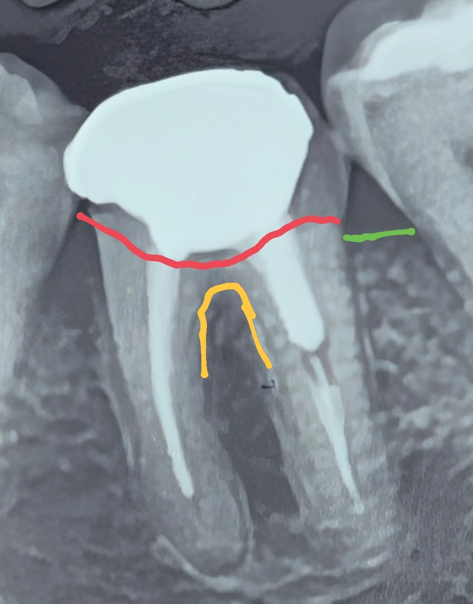

چرا این دندان امکان بازسازی دائمی ندارد؟

🟦 clinical insight
چرا این دندان امکان بازسازی دائمی ندارد؟ و چرا ایمپلنت انتخاب منطقی، پایدار و استاندارد است؟
در این کیس، یک مولر پایین چپ با تخریب گستردهٔ ساختار و مشکلات درمان ریشه مشاهده میشود. تحلیل دقیق رادیوگرافی و معاینهٔ کلینیکی موارد زیر را مشخص میکند:
1️⃣ پوسیدگی رادیوگرافیک همیشه کمتر از واقعیت دیده میشود
مرز پوسیدگی (خط قرمز) در تصویر نشاندهندهٔ تخریب وسیع است، اما در رادیوگرافی عمق و وسعت واقعی پوسیدگی کمتر از مقدار حقیقی دیده میشود.
در کلینیک این به معنی:
- از بین رفتن بخش زیادی از نسج کرونال
- نبود امکان ایجاد ferrule کافی
- عدم پایداری ترمیم در بلندمدت
2️⃣ biologic width قابل تأمین نیست
طبق خط سبز (سطح استخوان)، ارتفاع نسج باقیمانده برای ایجاد bw مناسب کافی نیست.
مشکل اصلی:
هر نوع تلاش برای ایجاد فضای bw با جراحی افزایش طول تاج، به دلیل میزان تخریب موردنیاز روی استخوان، ما را در محدودهٔ فورکا قرار میدهد.
این به معنای:
- ریسک درگیری فورکا طی جراحی
- پیامدهای پایدار روی سلامت پریودنتال
- غیرقابل پیشبینی شدن حفظ دندان در بلندمدت
3️⃣ جراحی با این حجم باعث افزایش گیر غذایی در امبراژورها میشود
برای تأمین bw، نیاز به برداشت استخوان و بافت نرم در سطحی است که:
- امبراژورها را بازتر
- گیر غذایی را بیشتر
- تمیز کردن ناحیه را مشکلتر
میکند.
4️⃣ درمان ریشه ناقص است اما حتی اصلاح آن مشکل اصلی را حل نمیکند
در تصویر:
- کانالها بهطور کامل و استاندارد پر نشدهاند
- نیاز به retreatment وجود دارد
اما حتی یک rct ایدهآل هم مشکل پریودنتال – بیولوژیک – ساختاری این دندان را حل نمیکند.
5️⃣ بیمار مسافر است؛ درمان باید قطعی، قابلپیشبینی و کمریسک باشد
با توجه به اینکه بیمار خارج از کشور است:
- درمانهای مرحلهای
- ریتریتهای احتمالی
- جراحیهای چندمرحلهای
- ترمیمهایی با ریسک بالای شکست
گزینهٔ منطقی برای او نیستند.
✔️ جمعبندی نهایی
با توجه به:
- پوسیدگی عمیقتر از حد رادیوگرافی
- عدم امکان تأمین biologic width بدون درگیری فورکا
- افزایش شدید گیر غذایی پس از جراحی
- درمان ریشه ناقص
- نبود ساختار پایدار برای بازسازی
- نیاز بیمار به درمان قطعی و پایدار
بهترین و استانداردترین طرح درمان: extraction + implant
این انتخاب:
- قابلپیشبینیترین نتیجهٔ فانکشنال را میدهد
- از مشکلات فورکا و BW جلوگیری میکند
- برای بیمار کمریسکترین انتخاب است
محتوای این صفحه برای استفادهٔ آموزشی دندانپزشکان و دانشجویان دندانپزشکی تهیه شده است.